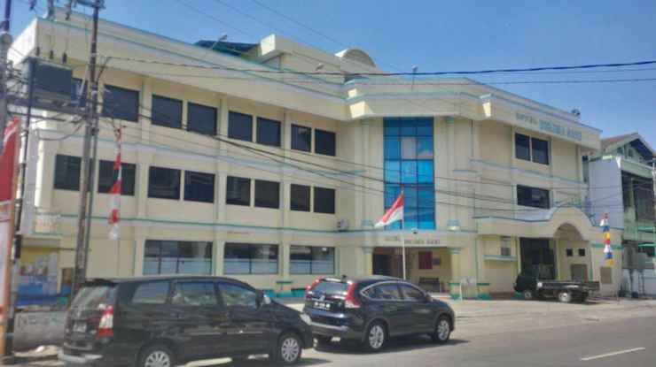
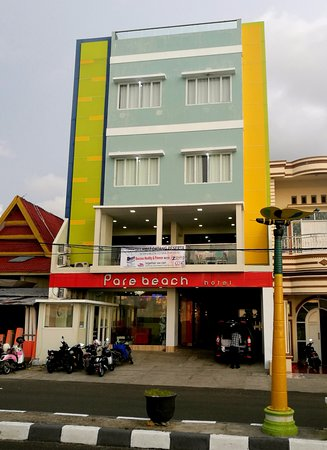

Penginapan Murah Parepare
Parepare dengan sejuta keindahan panorama perbukitan dan kemeriahan kota membuat sejumlah pelancong ingin menghabiskan tidak hanya sehari di tempat ini. Pelancong mengharapkan penginapan yang murah meriah dan berada di lokasi strategis alias dekat dengan pusat kota atau keramaian. Parepare telah memiliki beragam akomodasi dari hotel, wisma, kost dan oyo atau red doorz. Meskipun terdapat banyak macam akomodasi, hotel menjadi hal yang menarik untuk diketahui dalam penyediaan akomodasi yang pas untuk para pendatang. Kepopuleran hotel memikat sejumlah pengusaha untuk membangun hotel mereka di beberapa titik, tentunya akan menarik pelancong untuk menginap dalam kurung waktu beberapa hari di Parepare. Berikut beberapa hotel yang penulis rasa cukup populer bagi penduduk Parepare.
Hotel Delima Sari Parepare
Hotel Delima Sari menjadi akomodasi yang paling 'debes' diantara akomodasi hotel lainnya. Hotel ini sudah cukup lama dan populer bagi penduduk kota Parepare dengan jumlah kamar kurang dari 40 unit. Penduduk Parepare biasanya menggunakan tempat ini sebagai pengadaan acara pengantin, konferensi pers artis, pertemuan besar dan lain-lain. Lokasi yang cukup strategis membuatnya ramai ditinggali, lebih detail tempat ini berada di Jalan Andi Makkasau sangat dekat dengan sejumlah tempat keramaian dan pusat perbelanjaan di pusat kota. Dikutip dari celebes, tarif penginapan termurah disini adalah 287 ribu rupiah termasuk sarapan pagi. Dengan tarif yang berbeda, hotel Delima Sari menyedikan tiga tipe kamar yaitu standar, silver dan business suite.
Mario Hotel Parepare
Mungkin hotel ini terbilang cukup jauh dari pusat kota, akan tetapi hotel ini menawarkan pemandangan pusat kota yang sangat bagus. Fasilitas yang ada di tempat ini adalah antar jemput bandara dan jaringan internet gratis. Tarif termurah hotel ini berada di harga 235 ribu rupiah untuk kamar sejumlah 13 unit. Fasilitas yang tersedia membuat hotel ini cocok untuk penginap dengan tujuan bisnis, liburan keluarga, dan pelancong.
Kepopuleran dan kualitas Mario Hotel membuat bisnis ini sering menawarkan promo diskon. Diskon yang terakhir yang diberikan adalah 30% off yang disebarkan melalui jaringan sosial hotel ini pada laman facebook mereka. Dengan adanya diskon ini, hotel mario seringkali terpesan penuh, sehingga apabila sahabat kost ada ingin menginap di tempat ini untuk beberapa waktu sebaiknya melakukan pesanan terlebih dahulu. Selain tempat yang baik untuk pemandangan, tempat ini juga strategis untuk melayani para musafir yang melewati jalan Poros Parepare-Palopo untuk beristirahat sejenak.
Hotel Pare Beach
Keunggulan Hotel Pare Beach adalah lokasinya yang berada di pesisir laut sebuah kota. Dengan fasilitas yang lengkap, hotel ini menawarkan sejumlah kamar yang terdiri dari tipe ruang superior, deluxe, suite dan eksekutif. Hotel ini terbilang lengkap dan sangat baik karena memiliki ruang meeting, kafe dan resto, dan ruang karaoke. Dikutip dari ekobiz pareparekota, harga termasuk sarapan pagi dari tiap kamar Hotel Pare Beach dirincikan sebagai berikut:
- Superior Room = 210 ribu rupiah
- Deluxe Room = 290 ribu rupiah
- Suite Room = 350 ribu rupiah
- Executive Room = 420 ribu rupiah
Pesatnya perkembangan bisnis di Parepare membuat orang luar dengan senang hati berinvesati di Parepare terutama dalam bidang akomodasi. Selain hotel, sahabat kost ada juga dapat memilih untuk tinggal di guesthouse, rumah kontrakan, atau kost di Parepare. Pemilihan akomodasi yang beragam di tempat ini, mendukung kota kelahiran Habibie ini berpotensi untuk menjadi kota wisata yang berkualitas. Hal tersebut didukung dengan kualitas infrastruktur yang saat ini mulai dibangun dengan sangat baik dan didukung oleh berbagai stakeholder.